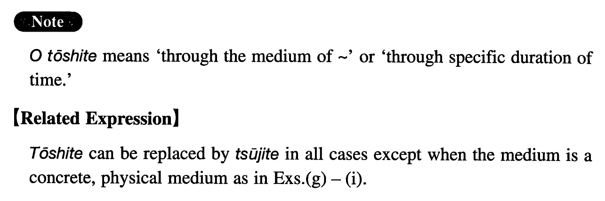

を通して (I. 330)
- (ksa).
- 私は親しい友達を通してそのピアニストと知り合いになった。
- I became acquainted with the pianist through a close friend of mine.
- (ksb).
- 私は一年を通して五回ぐらい海外に行っている。
- I go abroad about 5 times a year (literally: throughout the year).
- (a).
- お書きになった御本を通して、先生のことは存じ上げておりました。
- I knew of you through the books you wrote.
- (b).
- その事件のことは新聞の記事を通して知っていた。
- I knew about the incident from newspaper articles.
- (c).
- その政治家は、首相の側近を通して、首相に接近した。
- That politician approached the Prime Minister through his entourage.
- (d).
- 二人は手紙のやり取りを通して親しくなっていった。
- Through an exchange of letters, the two became close.
- (e).
- ラジオもテレビも全国の放送網を通して放送される。
- Both radio and television programs are broadcast through the nationwide network.
- (f).
- 海外生活の経験を通して色々なことを学んだ。
- I have learned all sorts of things through my life in foreign countries.
- (g).
- カーテンを通して室内の様子が見えた。
- What was inside the room was visible through the curtain.
- (h).
- これらの写真を通して当時の人々の生活を偲ぶことが出来る。
- Through these photos, we can relive the lives of people in those days.
- (i).
- 現場に残された指紋を通して犯人が割れた。
- They found the criminal through the fingerprints left behind at the scene of the crime.
- (j).
- 父は一生を通して、一度も東京を出たことがない。
- My father has never left Tokyo in his life.
